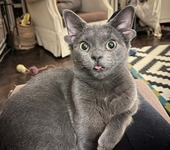
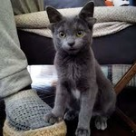
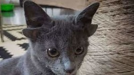

Кошечка с четырьмя ушками — генетическая аномалия — долгое время жила в приюте, но её забрали домой хозяева из Турции. Как пишет «Афиша», они хотят показать, что нельзя дискриминировать питомцев (и, конечно, людей) по тому, как они выглядят.
  